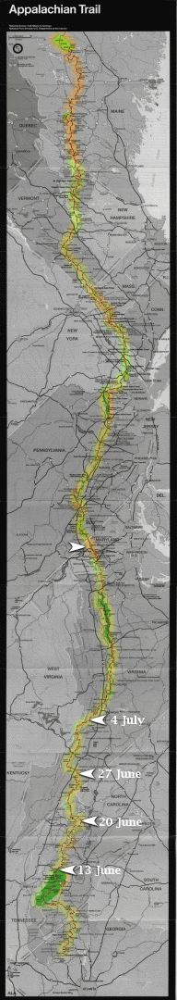

| Home | The Fox | Statistics | Maps | Churches |
StatusConfirmed - Evening 23 July 1998:Confirmed - the Fox is in Hagerstown, MD Confirmed - Confirmed - Last position on trail was near: Confirmed - 1024.2 miles complete (47.30%) Confirmed - 1141.3 miles to go (52.70%)
The Fox Blows a Tire24 July 1998 The Fox is off the trail. Pain that started recently in one foot grew finally unbearable, until yesterday he was forced to leave the trail and find a ride to the emergency room in Hagerstown, Maryland.The doctor reported that the foot is neither sprained nor fractured; rather it has become severely swollen due to the stress of a seven hundred mile walk. The Fox is on prescription strength Ibuprofen and has been orded to bed rest for two days. Both the Fox and we here at headquarters hope very much that the foot recovers and he can return to the trail next week. While in Hagerstown, the Fox is staying at a Super-8 motel. Family or friends may wish to call him to cheer him up; his phone number is 301 739 5800. |

Legend
|